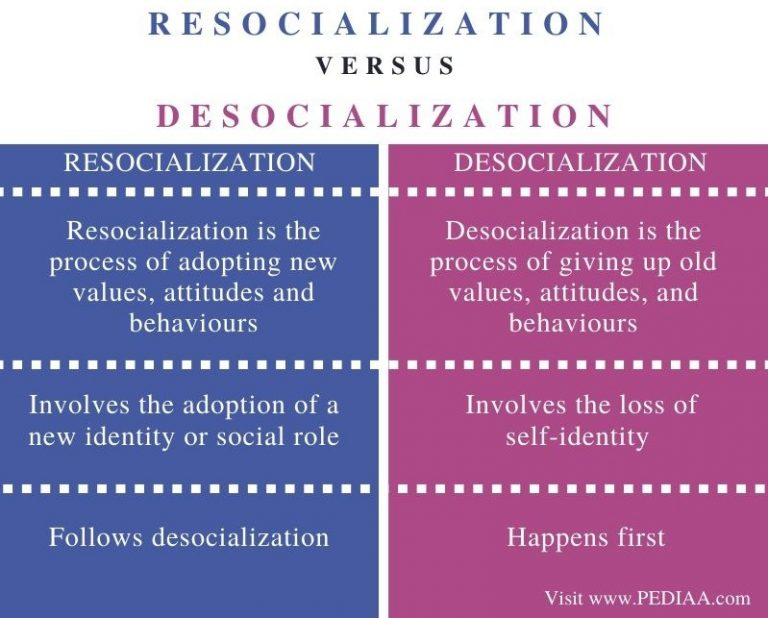

Web, identity, Covid and the lack of resocialization possibilities

What Covid has really opened my eyes to, is how much I hate the modern internet. I can live with the advertising, but I hate being sucked into being a co-editor of a media platform. There is no way to participate without adopting the idea that it is cool (acceptable and valuable) behaviour to wave your identity in front of everyone. And don't get me wrong, I mostly don't have anything against most people's life choices and I'm lucky to know some very lovely people... but holy cow I hate how the very things that make us sometimes sparkle get reduced into endless, lifeless stream of marketing valued by shitty algorithms.
There are very few things I feel so strongly about that I would be willing to represent them as part of my identity - only two come to my mind: The first would be my family, but I value the privacy of my family as much I value mine, so there is that. The second would be the environment, but there is really nothing anyone can buy that would make the world a better place, so no, I will not share what I did yesterday. No tech platform or company will solve social or environmental issues, as long as they force our identities and social roles to adhere to marketing.
(Note: This is not an exhaustive list of things I care about and I know my privileged position.)
So I find myself desocialized without a way to resocialize. Not because I don't value my friends, but because I don't value how the platforms that have taken over our communication.